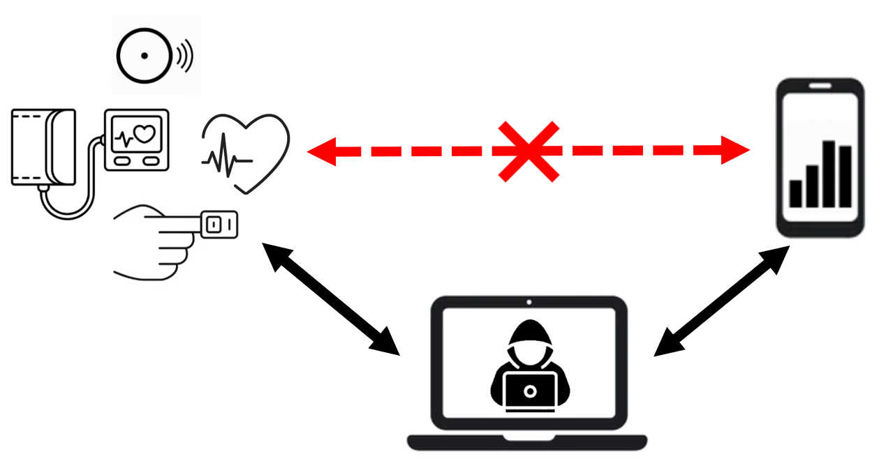
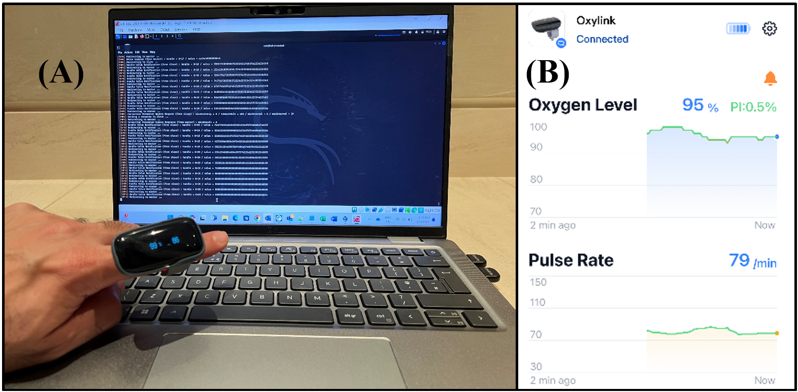

Live Demonstration
Unveiling Vulnerabilities in Wireless Wearable Sensors
Mohammad Alhussan, Francesca Boem, Sara Ghoreishizadeh, Anna Maria Mandalari
University College London
Last updated: May 2025
Abstract
This live demonstration showcases the potential vulnerabilities in some wireless wearable sensors that use Bluetooth Low Energy (BLE) for communication, focusing on the risks of Man-in-the-Middle (MITM) attacks, data sabotage, and manipulation. We show how these attacks can compromise not only the confidentiality and integrity of sensitive medical data transmitted by wearable devices, but also patients’ privacy and sensor reliability.
Demonstration Setup
Our setup includes commercial BLE-enabled medical sensors such as ECGs, oximeters, and blood pressure monitors (e.g., SnapECG, Wellue Oxylink, Wellue BPM). Using the Mirage tool and BLE dongles with Kali Linux, we simulate MITM attacks to intercept and alter health data. These demonstrations are conducted live, enabling visitors to engage with the devices and observe real-time exploits.
Visitor Engagement
Attendees experience firsthand the risks associated with BLE-based communication in wearable sensors. They can wear the sensors, see intercepted data visualized, and even participate in launching attacks in a controlled environment.
Impact
This demo emphasizes the importance of strengthening the cybersecurity of wearable devices. Our findings call for urgent action by manufacturers, researchers, and regulators to implement robust safeguards for patient safety in the Internet of Medical Things (IoMT).


All experiments were performed in a controlled testbed and pose no real-world risk.
About this publication
Conference: IEEE BioSensors 2024
Paper Title: Hacking Health: Unveiling Vulnerabilities in Wireless Wearable Sensors
Authors: Mohammad Alhussan, Francesca Boem, Sara Ghoreishizadeh, Anna Maria Mandalari
Link: IEEE Xplore